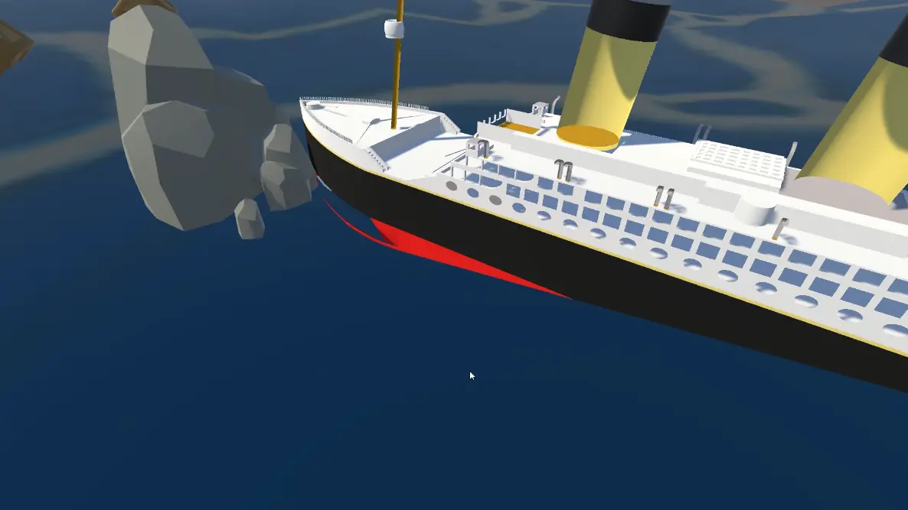
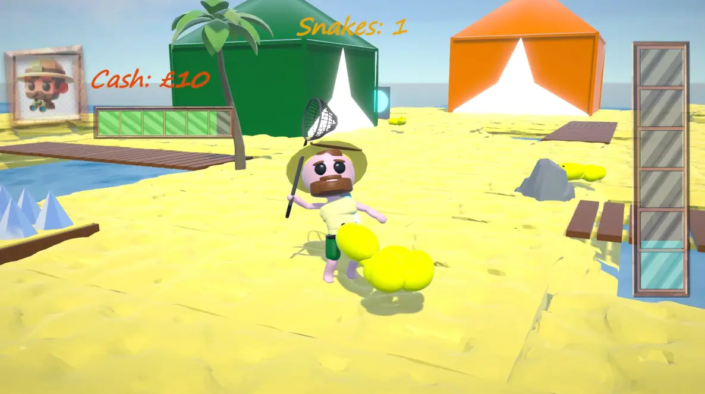
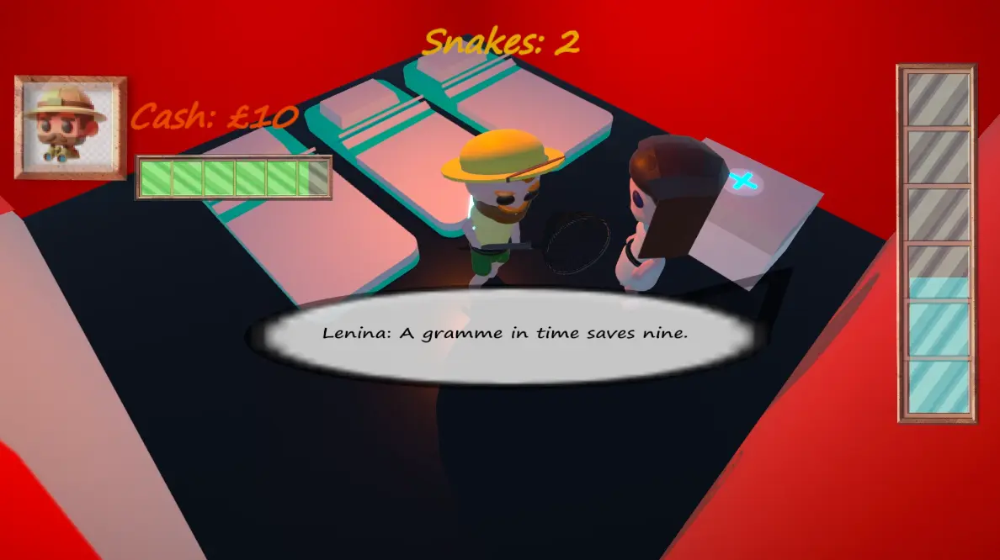

This is the very first game jam I have entered and I have entered with two of my IRL friends Mak and Ben.
TTG2025 is a game jam where you get three random words and you have to make a game all about it. Our three words were Snakes, Sending and Ocean liners so we made a game where you had to capture snakes that escaped off the edmund fitzgerald and you get powerups etc. The game is called The Catcher Of The Snakes: an Edmund Fitzgerald tribute. We decided to use unity and Ben was the main lead programmer, mak helped with some of the other aspects of the game e.g., the cutscene intro and I mainly worked on the UI/UX and did some small programming bits. Similar to GGJ(Global Game Jam 2026) we had about a week to fully finish the game although there was some bits that we couldn't finish. It was really fun working on a game of this scale and we ended up winning in the end which is something I didn't expect for the first game jam I entered. Even if my contributions weren't as big as the rest of the team members it made me feel more confident and enter a game jam and make a game all on my own. That ended up being Global Game Jam 2026.


In any case I hope you like the game that we made and any other games I will make in the future!